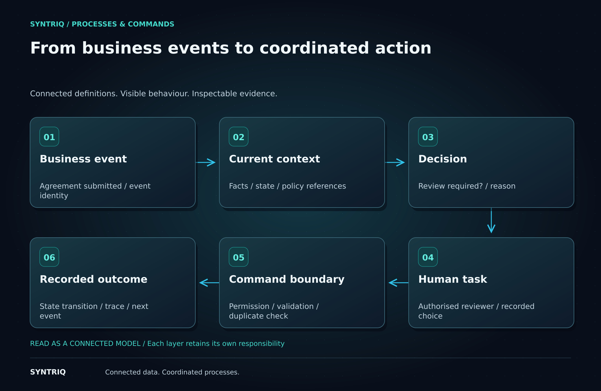

Make the path through work explicit
A business event often starts a chain of work. An agreement is submitted, information is checked, someone reviews an exception and an activation follows. When those steps live in disconnected handlers, it becomes difficult to explain where the work is or why it stopped.
Syntriq connects events to explicit process definitions. Each step has a responsibility, and the workflow coordinates how supported tasks, decisions and commands fit together.
Keep process and policy connected
The process determines when a decision is needed and what to do with its outcome. The policy determines the business answer. For an agreement, the workflow asks whether review is required; the versioned rule evaluates the relevant facts.
This separation allows a policy threshold to change without duplicating the approval logic across every screen. It also makes the process easier to inspect: the decision result and the path taken can be shown together.
Treat human work as part of the system
A review task needs a clear purpose, the relevant facts and a record of the reviewer’s choice. The application should preserve the relationship between that choice and the transition it permits. An interface can present the task without becoming the only place where its rules are enforced.
For a correction journey in ChargeWeave, this connects a proposed correction to validation, calculated values, review and application. The specific business definitions belong to the domain application.

Apply changes through commands
Commands are the boundary at which an intended action becomes a state change. The contract describes permissions, validation, duplicate handling and failure behaviour. An event may be delivered again or an engineer may retry a request; the action must follow its declared semantics.
XFlow and XState provide process and state coordination in the established direction. Visual process explanations should match the supported execution contract. A diagram alone does not establish that every notation or external workflow engine is executable.
Give the engineer an observable journey
A process trace should make it possible to see the initiating event, decisions, tasks and command results. Scenario runs can then explore a normal journey, a rejected action or an interrupted step. The AI workbench can use those traces to investigate a candidate change.
As the generic runtime moves into Syntriq, these contracts provide the continuity. The domain package still defines what the business process means; the reusable engine coordinates its supported operations.
Make work traceable from the initiating event to the resulting business action.